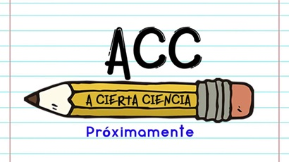
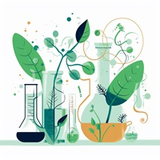

En el campo de la biotecnología, tener páginas de ayuda es fundamental por varias razones:
Complejidad del campo:
La biotecnología es un campo altamente especializado que combina conocimientos de biología, química, ingeniería y otras disciplinas. Las páginas de ayuda pueden ofrecer explicaciones detalladas sobre conceptos complejos, técnicas de laboratorio, protocolos experimentales y aplicaciones tecnológicas, lo que ayuda a los profesionales y estudiantes a comprender mejor este campo.
apoyo a la investigación y el desarrollo
Las páginas de ayuda pueden servir como recursos valiosos para investigadores y profesionales que trabajan en proyectos de biotecnología. Pueden ofrecer guías paso a paso, consejos prácticos, bases de datos, software y otra información relevante que ayude en la planificación, ejecución y análisis de experimentos y proyectos de investigación.
Actualización continua
La biotecnología es un campo en constante evolución con nuevos descubrimientos, avances y tecnologías emergentes. Las páginas de ayuda pueden proporcionar información actualizada sobre las últimas investigaciones, tendencias y herramientas disponibles, lo que permite a los usuarios mantenerse al día con los desarrollos más recientes.
Este youtuber llamado a ciencia cierta te explicara paso a paso varios temas relacionados con biotecnología, dar click en la imagen para acceder a los links 
Si la pagina anterior no te convence puedes visitar esta también tiene buenas explicaciones, dar click en la imagen para acceder a los links
En esta pagina encontraras varias revistas interesantes y actuales sobre biotecnologia, dar click en la imagen para acceder a los links
Si lo tuyo no es el youtube y no te gusta leer puedes visitar esta cuenta de tiktok, dar click en la imagen para acceder a los links